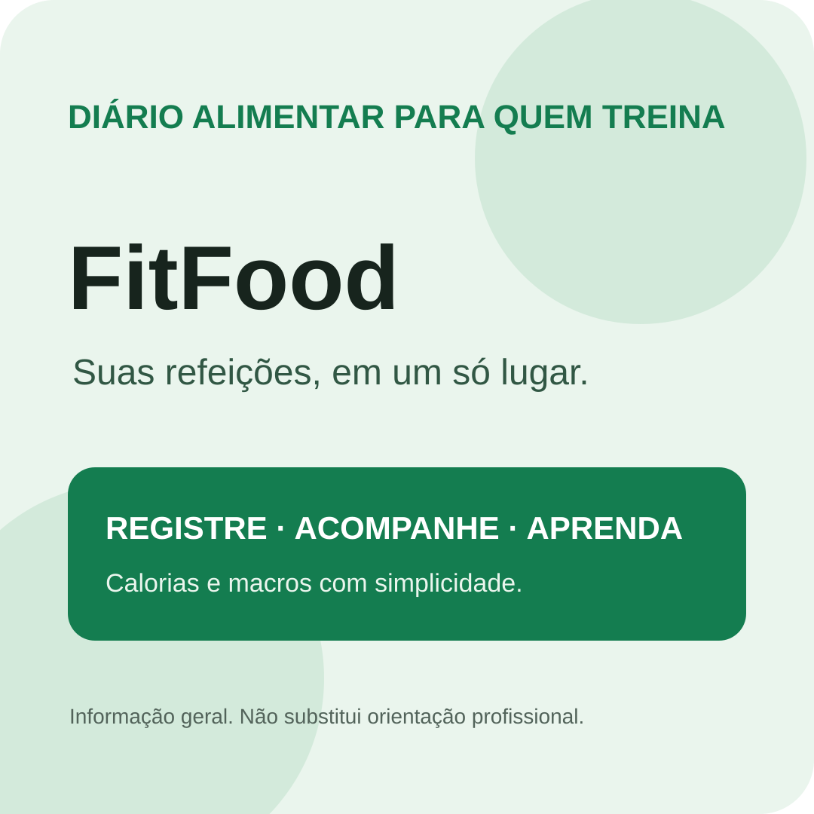
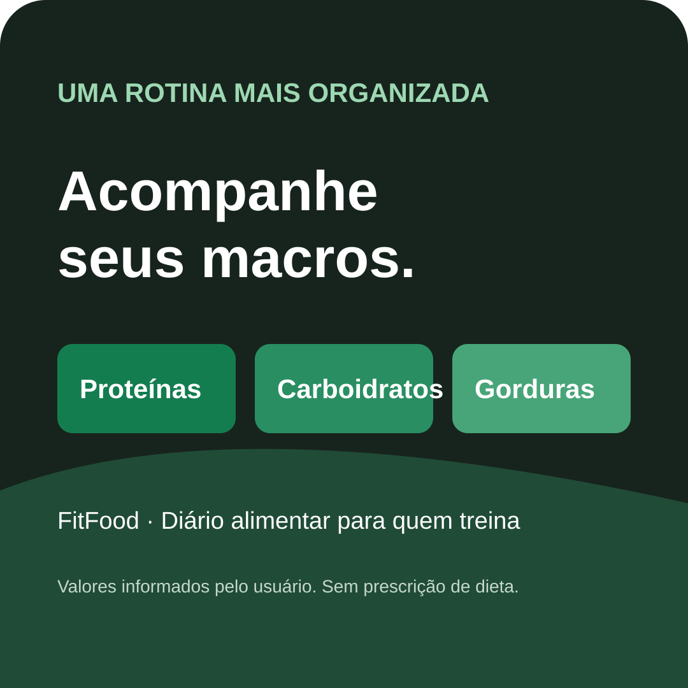

Diário alimentar para quem treina
FitFood
Registre refeições e acompanhe calorias, proteínas, carboidratos e gorduras em um só lugar.
A versão beta para Windows está disponível para teste. A API pública ainda está em preparação.
Baixar instalador para Windows (beta) API web (em breve)O que você pode acompanhar
- Refeições registradas e porções informadas por você.
- Resumo diário de calorias e macronutrientes.
- Ideias gerais de refeições com IA, quando configurada.


Download
O instalador beta e o executável portátil estão disponíveis no release.
Ver lançamentos do FitFoodAPI web
A API está disponível para execução local; o serviço HTTPS público ainda não foi configurado.
Requisitos e perguntas frequentes
Requisitos: Windows 10 ou superior para a versão beta. O código Python pode ser executado com Python 3.10+ em Windows, macOS ou Linux.
Preciso de uma chave de IA? Não para registrar refeições. A chave é opcional e necessária somente para sugestões gerais.
O app define uma dieta? Não. Ele registra valores informados pelo usuário e não calcula metas nem prescreve alimentação.
As informações nutricionais são fornecidas pelo usuário e não são verificadas. Sugestões de IA podem conter erros e não substituem orientação de nutricionista ou profissional de saúde.